Module 6—Petrochemicals
 Self-Check Answers
Self-Check Answers
Contact your teacher if your answers vary significantly from the answers provided here.
SC 1.
Practice 4.
Because volatility is inversely proportional to the strength of intermolecular forces, the order of increasing volatility is: alcohols, organic halides, hydrocarbons.
Practice 5.
- butan-2-ol
- pentan-2-ol
- cyclohexane-1,3-diol
Practice 6.
-
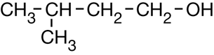
-
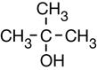
-
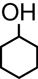
-
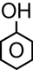
Practice 7.
- 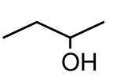
- 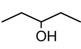
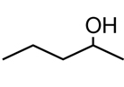
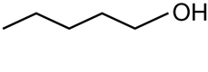
Practice 8.
Methanol (CH3OH, 18 electrons) exhibits London forces, dipole-dipole forces, and hydrogen bonding. Methane (CH4, 10 electrons) has weaker London forces than methanol and exhibits no dipole-dipole forces or hydrogen bonding. Theories suggest that the intermolecular attractive forces influence the boiling point. Methanol, having stronger intermolecular forces, should therefore have a higher boiling point.
Practice 9.
- The order is ethane (C2H6, 18 electrons), fluoromethane (CH3F, 18 electrons), methanol (CH3OH, 18 electrons). Each compound has similar London forces, but fluoromethane has dipole-dipole forces and methanol has dipole-dipole forces and hydrogen bonding.
- The order is pentane (C5H12, 42 electrons), 1-chlorobutane (C4H9Cl, 50 electrons), butan-1-ol (C4H9OH, 42 electrons). Pentane has only London forces. The other two have London forces and dipole-dipole forces. Even though the London forces in 1-chlorobutane are slightly stronger than those of butan-1-ol, this is more than offset by the fact that butan-1-ol is the only compound exhibiting hydrogen bonding.
Practice 10.
With its three O-H bonds, glycerol forms strong hydrogen bonds with water molecules. This makes it more difficult for water molecules to come together in the correct arrangement to form crystals. Therefore, a lower temperature is needed to cause freezing.
Practice 11.
- Ethane (C2H6, 18 electrons) has the lowest boiling point because it only exhibits London forces. Chloroethane (C2H5Cl, 34 electrons) has a boiling point between those of ethane and ethanol because it has stronger London forces than ethane and has dipole-dipole forces. Ethanol (C2H5OH, 26 electrons) has the highest boiling point because, even though it has weaker London forces than chloroethane, it exhibits hydrogen bonding.
- Ethanol has the greatest solubility because, like the solvent water, ethanol is a small, polar, hydrogen-bonded substance. Chloroethane has slight solubility because it is a small, polar molecule. Ethane is the least soluble because it has no polarity or hydrogen bonding.
Practice 12.
- CH4(g) + H2O(g) → CO(g) + 3 H2(g)
- CO(g) + 2 H2(g) → CH3OH(l)
Practice 13.
- 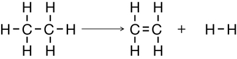
- 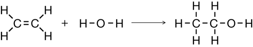
Practice 14.
- 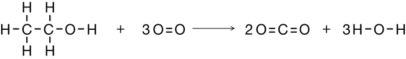
- 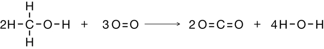
Practice 15.
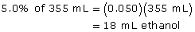
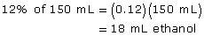
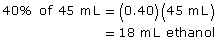
- Each drink has the same alcohol content.
Practice 16.
Economic perspective:The government generates enormous tax revenues from alcoholic beverages. Denaturing industrial alcohol prevents people from obtaining alcohol without paying the tax.
Societal perspective: If not denatured, alcohol would be more easily obtained, likely increasing alcoholism and consumption by minors.
Practice 17.
The relative boiling points should increase in this order: methanol (CH3OH, 18 electrons), ethanol (C2H5OH, 26 electrons), propan-1-ol (C3H7OH, 34 electrons), butan-1-ol (C4H9OH, 42 electrons).
All four compounds exhibit London forces, dipole-dipole forces, and hydrogen bonding. The order given corresponds to the fact that the London forces, and hence the boiling points, increase with the increasing number of electrons.
The boiling points are 64.7°C, 78.4°C, 97.1°C, and 117.7°C for methanol, ethanol, propan-1-ol, and butan-1-ol respectively.
Evaluation: The prediction is judged to be verified by the literature values.